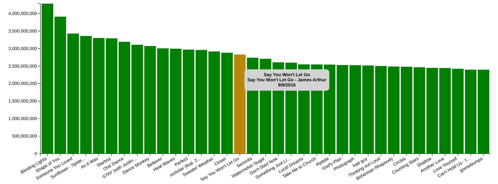
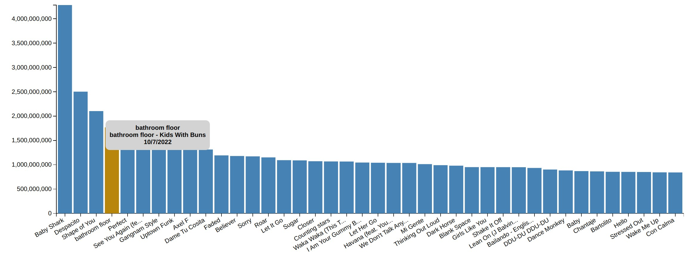
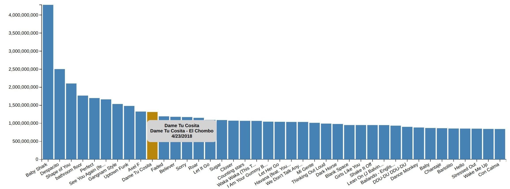
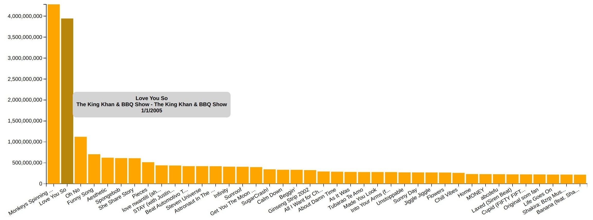
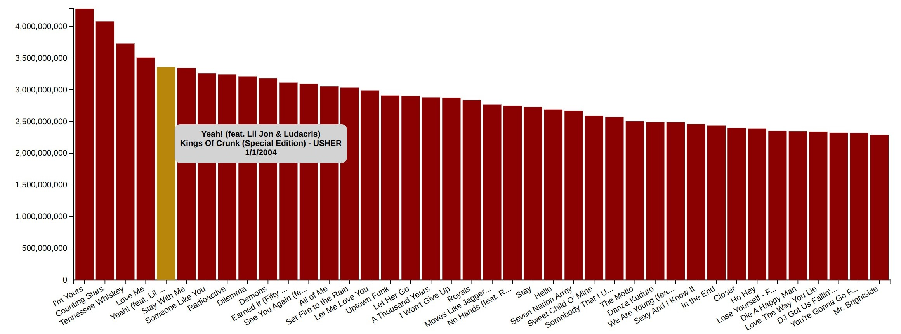
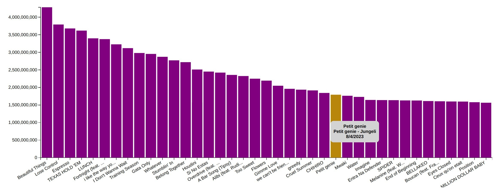
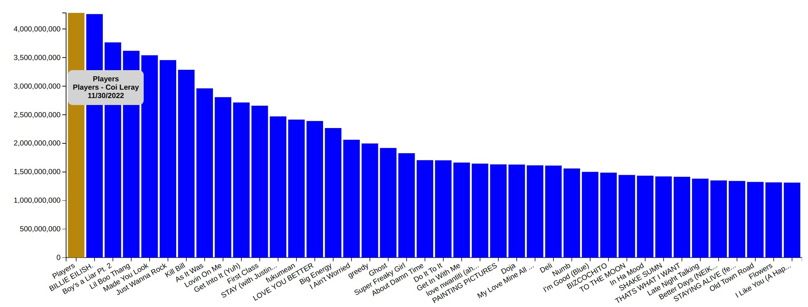
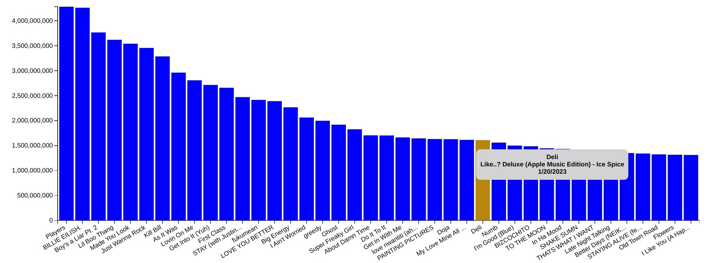
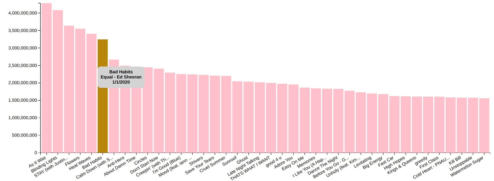
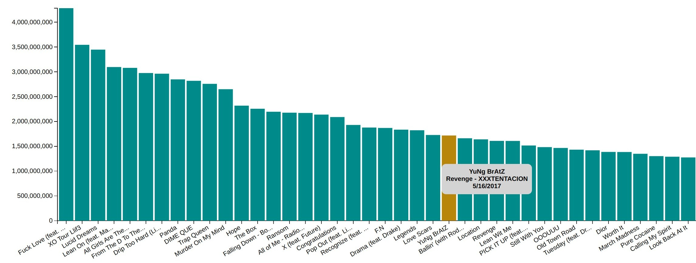

The Design Process
The first step in my design process was understanding the dataset I would be using. I chose a dataset of music from 2024 with streaming numbers across a variety of streaming platforms (i.e., Spotify, SoundCloud, Apple Music).
To design an effective visualization, I needed to understand the columns in the dataset, any gaps in data I might need to supplement, and what data cleanup might be necessary to improve the quality of the data. I also wanted
to get an idea for the type of analysis I might accomplish, so I played around in the csv with different filters. I spent several hours cleaning up the song information -- special characters were a mess and the album and artist
names were not always accurate.
My initial aspirations were to create a visualization similar to the Music History animated timeline from The Pudding. This visualization would involve tracking the number
of streams across all platforms for the entirety of the year to show rises and falls in popularity of the top ten songs. I imagined adding filters so the user could choose a particular month or a particular artist. On the side,
there would be an inforamational section that would detail the song title, artist, album name, release date, and more for each of the ten songs.

As I began digging into the data and coding the project, I realzed such a visualization would not be possible for various reasons (the most important being that my dataset only had yearly streaming totals, not monthly). So I pivoted
my design to focus on showing a yearly overview. I could separate the visualization based on streaming platform and indicate the most popular song of 2024 on each. The right-hand side could still have a song information section like
I had initially designed. And filters would allow users to search for a particular song, artist, or album, and see how it performed on each streaming service.

I ended up changing this design because I didn't like how much it forced the user to filter to locate data they would find valuable. I wanted a visualization that presented a main question and answers for that question in an accessible manner.
The user could then use filters to "flip through" the answers. After playing around with ideas, I landed on showing the top 40 songs for the year for each music platform. Rather than having a separate song information table, I would implement
tooltips to show the song title, album name, artist, and release date. Each streaming service would have a filter so the user could switch from view to view.

Rational for Design Choices
Bar Chart
A bar chart is perhaps the most common visualization to compare numeric data points. Bar charts can easily show variations through height and categorization through coloring. Typically, a bar chart will have a qualitative axis (i.e., the categories) and a quantitative axis (i.e., the numeric values). In my design, a bar chart made the most sense to utilize, as I was comparing a numeric value (streaming count) for a discrete time period (one year) across eight categories (streaming service). A bar chart would also allow me to default the filtering from highest to lowest, so the user can clearly see not just the top 40 but also the individual ranking of each song on the chart.
Color Choice
For the color scheme, I determined that each category needed a distinct color to help the user easily identify each streaming platform (and be able to tell at a glance which filter they were on). I designed the color scheme around the IBM Design Language color palette, specifically their categorical color palette. It does include some colors that might be difficult for color blindness; however, since the chart does not mix the colors on the same view (i.e., each filter uses a distinct color), the visualization is still accessible for someone with color blindness. Another color choice I made was to have the bar change to a yellow gold when the user hovered over it. I wanted to be to very clear to the user what element they were interacting with on the chart at any given moment.
Chart Arrangement
My visualization has a single chart with multiple views based on the filter chosen. That being the case, my arrangement choices focused more on where to place the instructions and filters around the main chart. My design choices tend to follow my ideas of what are natural for the human eye. Since we, as English speakers, read left to right and top to botton, I placed the various elements in my visualization in that order: instructions are at the top to orient the user, filters are next to allow for easy navigate, and the chart is next and is the largest element to enable the user to interact with the data.
Tooltip Design
To ensure my visualization was providing enough information to tell a complete story, I wanted to include tooltips. Tooltips served the added purpose of being able to display the entire song title rather than relying on the x-axis tick marks; this allowed for a cleaner design of the chart and associated labels. As the user hovers over each song on the bar chart, the bar changes colors and a gray box appears showing the song title, the album name, the artist, and the release date. The tooltip design itself is simple: a light gray background to provide a contrast to the other screen elements, same size text as the other chart labels but bolded to catch the eye, and transitions to follow the mouse movement intuitively (i.e., appear where the mouse hovers over the bar, disappear when the mouse is moved to another place on the screen).
Answering the Questions
The foremost question my visualization answers is what are the top 40 songs from 2024 on Spotify or YouTube or Apple Music. The answers to this question raise even more interesting questions around what genres were most popular, which artists appear most often, what is the cause of the differences in top songs from platform to platform, and much more.
Spotify Analysis
Looking at the Spotify view, one theme of note is that none of the top 40 songs were released in the past two years. It seems like listeners might have been feeling some nostaliga in their music choices, specifically the sounds of the 2010s.
This observation would be interesting to explore in combination with data on which age demographic most uses Spotify (i.e., what percentage of Gen Z versus Millenials use the streaming platform?), the geographic location of listeners, or
even exploring aspects of Spotify itself like its curated playlists and which genres are most popular and recommended to listeners.

YouTube Analysis
When we flip to the YouTube view, the immediate difference is that the streaming numbers for the most popular songs are much lower on this platform than the songs on the Spotify list. As you scan through the titles, two more themes appear: there are more children's songs in the top 40 (5 in total) and more songs from non-English speaking artists.  
TikTok Analysis
Unsurprisingly, the most popular songs on TikTok were all background music for viral trends. The first two songs were used significantly more times than the remaining 28; some additional research reveals that TikTokers used these two compositions quite often to work the app's algorithm. Using the same song from a viral TikTok increases your chances of going viral or at least upping your view count. 
Pandora Analysis
As we continue making our way through each streaming platform, one intriguing note is that there is not much overlap in the individual top 40 lists thus far. Pandora does share a theme with the Spotify list, though, as the most popular songs are not recent releases. In fact, the majority of them are from the 00s. Again, this begs further questions as to which age demographic composes most of the Pandora listening base, how the app itself is structured to recommend music, which third parties Pandora works with for music rights, and so on. Another point of interest in the Pandora song list is the higher mix of rappers and country artists that appear as compared to the pop-heavy Spotify list, the children and foreign songs that were most popular on YouTube, and the viral music from TikTok. 
Deezer Analysis
The top 40 songs from Deezer were almost exclusively released in the past two years. This may be because, while Deezer does offer listeners the ability to curate their own playlists, it also streams radio stations. Given that radio stations tend to keep
up with the times, it makes sense that the top 40 list is geared toward the hottest hits of the past few years. Another aspect to note is that Deezer is a French-based streaming service, so the top 40 list also includes a number of songs in other languages
like Spanish and French.

SiriusXM Analysis
As a classic radio station, SiriusXM demonstrates similar findings as the Deezer top 40 list. It has one major difference: SiriusXM features lots of rappers and DJs. SiriusXM has dedicated hip-hop channels on its platform that draw a large audience, which most likely contribute to these artists ranking in the top 40 songs.  
Apple Music Analysis
To this point, we've focused mainly on the songs and the genres that appear on each streaming service view. Coming to Apple Music, we will shift our analysis to the artists. Harry Styles, Taylor Swift, The Weeknd, Ed Sheeran, and Justin Bieber made frequent appearances on all top 40 lists. Tate McRae, Dua Lipa, Sia, Post Malone, and Drake also feature quite often. If we were to develop the visualization further, it would be interesting to focus on the artists and ranking them in popularity based on the total number of streams for any of their songs on each streaming platform. 
SoundCloud Analysis
Last but not least, we reach SoundCloud. Though other platforms have included hip-hop artists, SoundCloud seems to be the place to go for this genre. 90% of the top 40 songs are all from rapper albums. XXXTentacion, an American rapper from Florida, was the artist who appeared most often. Some quick research uncovers that there is a music genre called SoundCloud rap, which has developed due to the app enabling artists to record and produce their own music directly on the platform. Artists are free to create whatever they want and post whenever they want. 